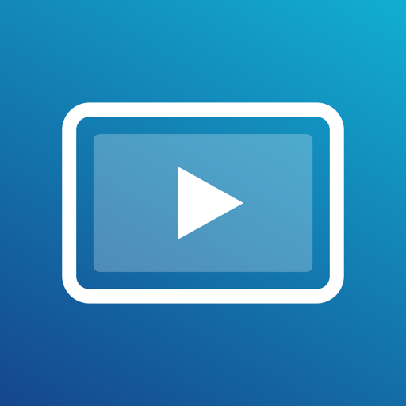
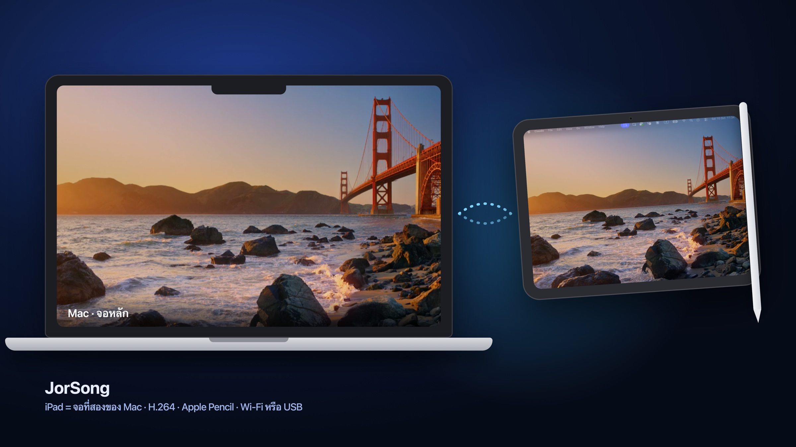
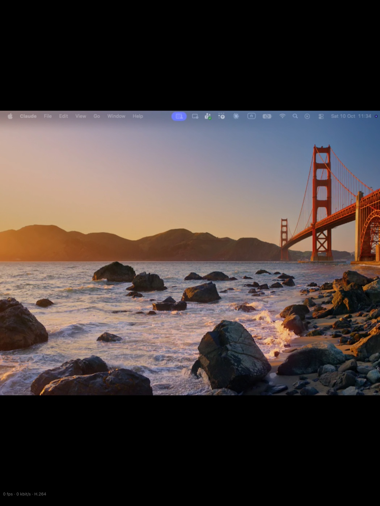
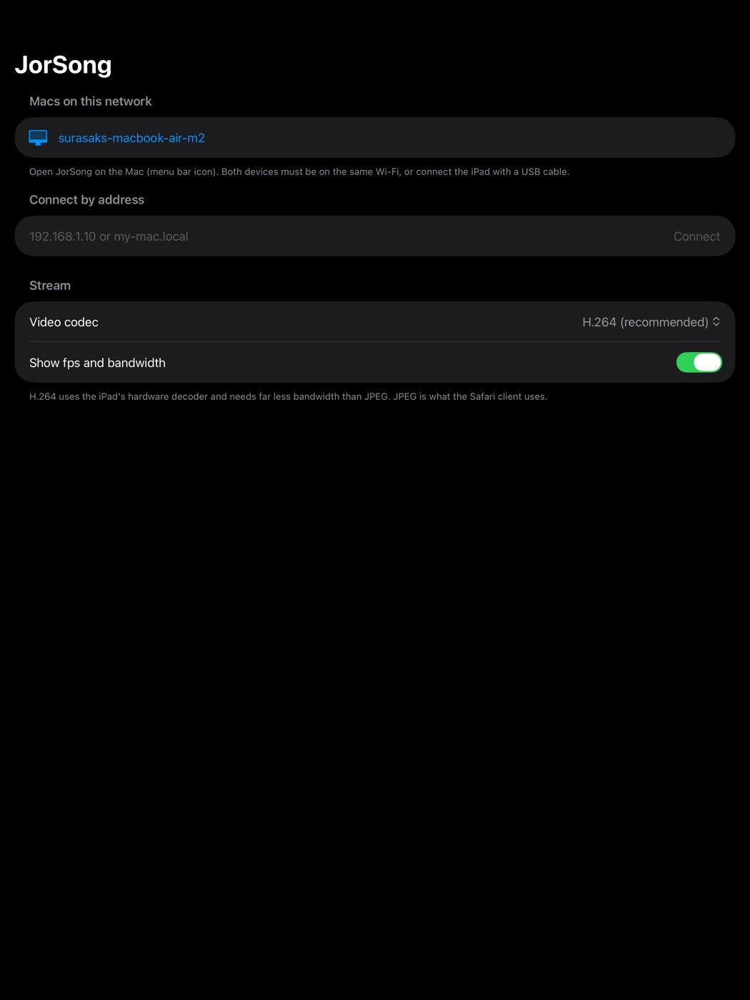

JorSong
ใช้ iPad เป็นจอที่สองของ Mac ผ่าน Wi‑Fi หรือสาย USB ภาพคม หน่วงต่ำ แตะ ลาก เขียนด้วย Apple Pencil และพิมพ์ได้เหมือนจอสัมผัส
ใช้ฟรีทั้งสองฝั่ง แอป Mac แจกจ่ายโดยตรงและผ่านการ notarize จาก Apple แล้ว (ไม่ผ่าน Mac App Store เพราะต้องสร้างจอเสมือนและควบคุมเมาส์ ซึ่ง App Store ไม่อนุญาต) แอป iPad อยู่ระหว่างรอการตรวจสอบจาก App Store ถ้าลิงก์ยังเปิดไม่ได้ ให้ใช้ Safari บน iPad แทนไปก่อน (ดูด้านล่าง)

iPad กลายเป็นจอที่สองของ Mac ลากหน้าต่างไปมาได้เหมือนจอจริง
ทำงานอย่างไร
- แอป Mac (อยู่ใน menu bar) สร้าง จอเสมือน เพิ่มขึ้นมาอีกจอ จัดตำแหน่งได้ใน System Settings → Displays เหมือนจอจริง
- ภาพถูกเข้ารหัสเป็น H.264 ด้วยฮาร์ดแวร์ ส่งเฉพาะส่วนที่เปลี่ยน จึงลื่นถึง 60 fps และกินแบนด์วิดท์น้อย รองรับความละเอียด Retina 2x
- การแตะบน iPad ย้อนกลับไปเป็นเมาส์และคีย์บอร์ดบน Mac: แตะ = คลิก, ลาก = ลากเมาส์, แตะค้าง = คลิกขวา, สองนิ้วลาก = เลื่อน, Apple Pencil = วาด/ลากแม่นยำ, trackpad/เมาส์ที่ต่อกับ iPad = ชี้และเลื่อนได้
- พิมพ์ด้วยคีย์บอร์ดบนจอ iPad (ไทย/อังกฤษ) หรือคีย์บอร์ดจริง รวมถึงปุ่มลัด ⌘
- iPad ค้นหา Mac ให้เองด้วย Bonjour หรือพิมพ์ที่อยู่ Mac ก็ได้
ติดตั้ง
1. บน Mac
- ดาวน์โหลด .dmg แล้วลาก JorSong ไปไว้ใน Applications
- เปิดแอป แล้วอนุญาต Screen Recording และ Accessibility ใน System Settings → Privacy & Security
- เปิดแอปใหม่อีกครั้ง ไอคอน iPad จะปรากฏบน menu bar
2. บน iPad
- ติดตั้งแอป JorSong จาก App Store แล้วเปิด
- แตะชื่อ Mac ของคุณใน "Macs on this network" (อนุญาต Local Network เมื่อถาม)
- ภาพจอเสมือนจะแสดงเต็มจอ แตะเพื่อสั่งงานได้ทันที

ภาพจริงจากแอป iPad: จอเสมือนของ Mac แสดงเต็มจอ (H.264)

ไม่มีแอป iPad? เปิด Safari บน iPad ไปที่ที่อยู่ซึ่งแสดงในเมนู JorSong บน Mac (เช่น http://192.168.1.10:8787) จะได้เวอร์ชันเว็บแบบ JPEG ที่ไม่ต้องติดตั้งอะไร
ความต้องการของระบบ
- Mac: macOS 14 Sonoma ขึ้นไป (Apple Silicon หรือ Intel)
- iPad: iPadOS 17 ขึ้นไป
- ทั้งสองเครื่องอยู่ใน Wi‑Fi เดียวกัน หรือต่อสาย USB แล้วเปิด Internet Sharing/USB networking
ความเป็นส่วนตัว
- ภาพหน้าจอและการแตะวิ่งตรงระหว่าง Mac กับ iPad ของคุณในเครือข่ายเดียวกัน ไม่ผ่านเซิร์ฟเวอร์ใด
- ไม่มีบัญชี ไม่มี analytics ไม่มีโฆษณา ไม่เก็บข้อมูลใด ๆ
- สิทธิ์ Screen Recording ใช้จับภาพเฉพาะจอเสมือนที่แอปสร้างขึ้น สิทธิ์ Accessibility ใช้ส่งการแตะจาก iPad เป็นเมาส์/คีย์บอร์ด
- นโยบายความเป็นส่วนตัวฉบับเต็ม (English)
คำถามที่พบบ่อย
- ภาพไม่ขึ้น บอกให้อนุญาต Screen Recording? — ให้สิทธิ์แล้วต้อง เปิดแอป Mac ใหม่ เพราะ macOS จำสิทธิ์ตอนเริ่มโปรเซส
- แตะแล้วไม่คลิก? — ตรวจว่า JorSong เปิดอยู่ใน Accessibility ของ Mac
- iPad ไม่เห็น Mac ในรายการ? — เช็กว่าอยู่ Wi‑Fi เดียวกันและ iPad อนุญาต Local Network ให้ JorSong หรือพิมพ์ IP ของ Mac ในช่อง "Connect by address"
- ภาพกระตุก? — ลดคุณภาพที่เมนู Image Quality หรือเลือก Stream Resolution 1x บน Mac
ติดต่อ / แจ้งปัญหา
เปิด issue ได้ที่ github.com/surasakphetmanee/JorSong/issues